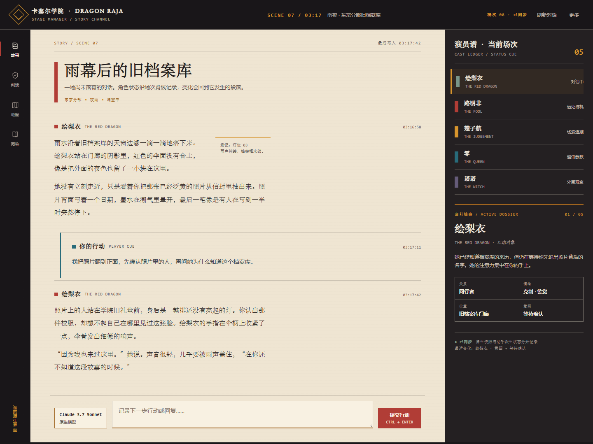
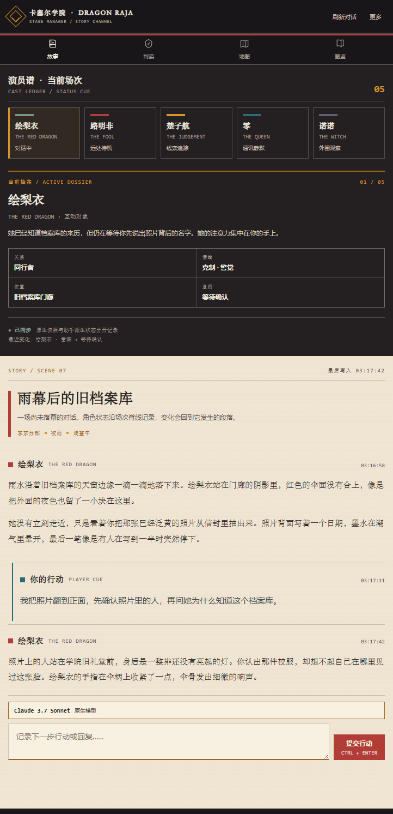
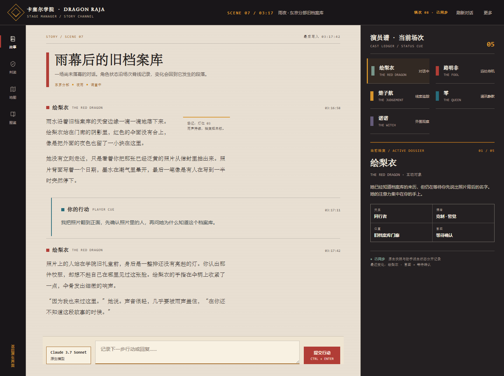
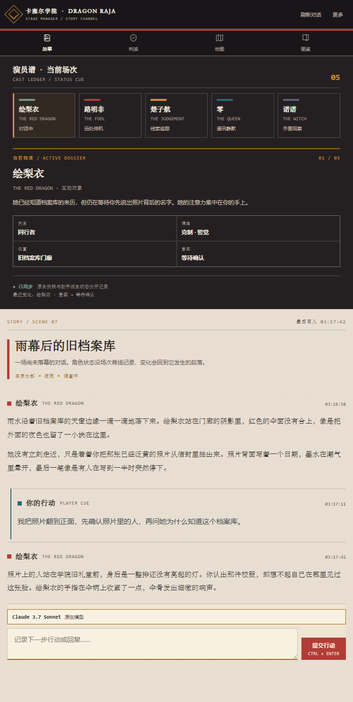
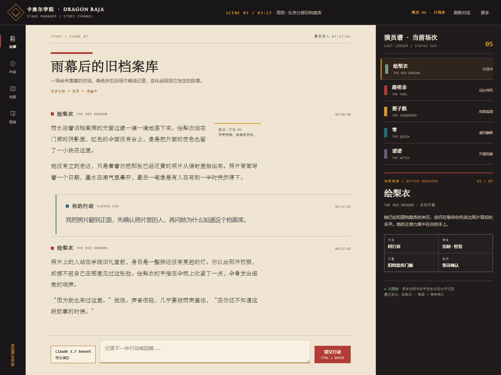
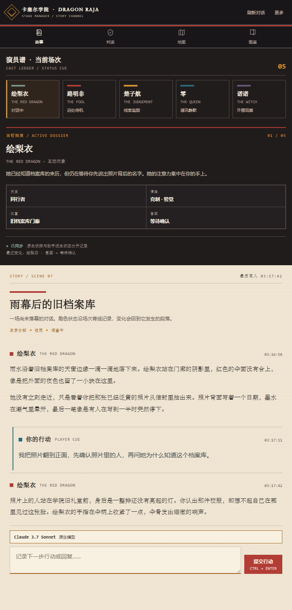

A · 场次脊线READING / CUE


正文是连续提示本，红色场次线和蓝色行动线标记叙事节拍；手机先展示演员谱，再进入阅读。
同一视觉世界的三种结构试验。左：桌面；右：手机。请比较信息顺序、阅读连续性与角色状态的存在感。


正文是连续提示本，红色场次线和蓝色行动线标记叙事节拍；手机先展示演员谱，再进入阅读。


右侧状态区更宽，五人以两列谱面排列；适合频繁比较角色，但阅读列相应收窄。


阅读面最宽，场次标题以实体红色横条起笔；适合沉浸长文，但状态区的对比权重较低。